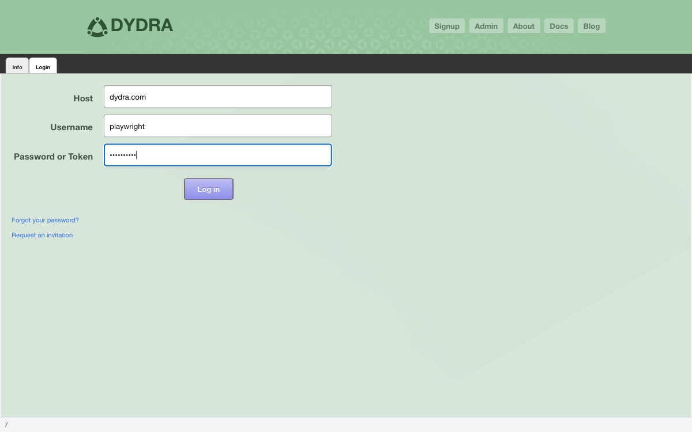

Dydra Studio · user manual · 01
Login and Authentication
Dydra Studio requires authentication to access your account and repositories. This section explains how to log in to the application and manage your session.
Dydra Studio · user manual · 01
Dydra Studio requires authentication to access your account and repositories. This section explains how to log in to the application and manage your session.
To access Dydra Studio, navigate to:
URL
https://dydra.com/ui/user
The application will display the login page when you first access it or when you are not authenticated.
To log in to your Dydra account:
Step 1
Navigate to the login page at https://dydra.com/ui/user

Figure 1: Login form with credentials entered, ready to submit
Step 2
Enter your account credentials:
https://dydra.com)Step 3
Click the Login button or press Enter
Step 4
Upon successful authentication, you will be redirected to your account page, where you can see your repositories and account information.
Note
The application supports multiple authenticated accounts simultaneously. You can switch between accounts or add additional accounts during your session.
Dydra Studio supports two authentication methods:
For normal user access, use Basic Authentication with your username and password.
The application persists only account name(s) across page reloads using browser storage. This means:
Important
Authentication tokens and all other session data exist only in JavaScript objects during a single page session. When you close the page or browser tab, all session data (including tokens) is discarded. You will need to log in again after closing the page, even if account names are remembered.
To log out of the application:
If you are unable to log in, check the following:
https://dydra.com)If you see an error message during login:
After successfully logging in, you can: